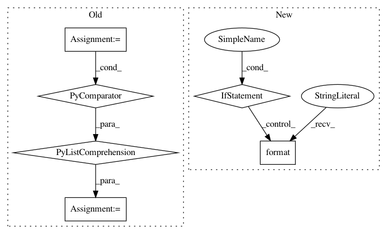

b7988369f77e12525604e2613b279c13f041f484,scripts/pose/simple_pose/validate.py,,,#,83
Before Change
net.hybridize()
if opt.dsnt:
heatmap_size = [int(i/4) for i in input_size]
net_dsnt = DSNT(size=heatmap_size[::-1])
net_dsnt.initialize(ctx=context)
net_dsnt.hybridize()
def validate(val_data, val_dataset, net, ctx):
After Change
use_pretrained = True if not opt.params_file else False
model_name = opt.model if not opt.quantized else "_".join([opt.model, "int8"])
if not opt.deploy:
net = get_model(model_name, ctx=context, num_joints=num_joints, pretrained=use_pretrained)
if not use_pretrained:
net.load_parameters(opt.params_file, ctx=context)
if opt.quantized:
net.hybridize(static_alloc=True, static_shape=True)
else:
net.hybridize()
else:
model_name = "deploy"
net = mx.gluon.SymbolBlock.imports("{}-symbol.json".format(opt.model_prefix),
["data"], "{}-0000.params".format(opt.model_prefix))
net.hybridize(static_alloc=True, static_shape=True)
print("Inference on model {} started!".format(model_name))
// calibration on FP32 model
def calibration(net, val_data, opt, ctx, logger):
In pattern: SUPERPATTERN
Frequency: 3
Non-data size: 6
Instances
Project Name: dmlc/gluon-cv
Commit Name: b7988369f77e12525604e2613b279c13f041f484
Time: 2019-12-04
Author: wuxun.zhang@intel.com
File Name: scripts/pose/simple_pose/validate.py
Class Name:
Method Name:
Project Name: ray-project/ray
Commit Name: 2cf4c7253ce1fd01975fcf970e52434e44f6d71f
Time: 2021-03-04
Author: ekhliang@gmail.com
File Name: python/ray/util/client/worker.py
Class Name: Worker
Method Name: get
Project Name: microsoft/nni
Commit Name: 8af731463df46f6c73c933bdc45ed9a4ecd4e422
Time: 2020-11-17
Author: Quanlu.Zhang@microsoft.com
File Name: nni/retiarii/codegen/pytorch.py
Class Name:
Method Name: model_to_pytorch_script